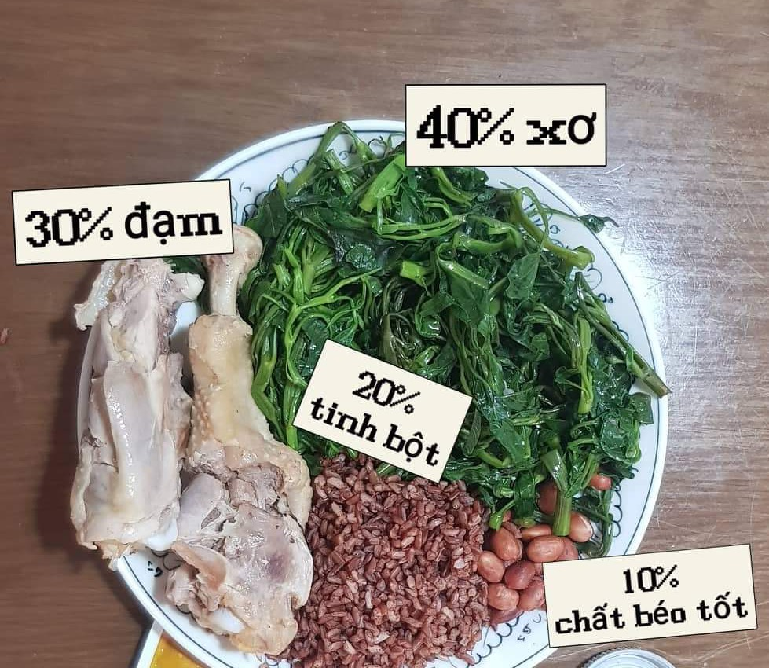

Nhìn bằng mắt, không cần cân đo

Ăn theo thứ tự rau → đạm → tinh bột.
| Ngày | Sáng | Trưa | Tối |
|---|---|---|---|
| 1 | Trứng luộc, rau, bánh mì nguyên cám | Cơm, cá kho, canh rau | Đậu hũ, rau xào |
| 2 | Yến mạch, sữa chua không đường | Cơm, gà luộc, rau muống | Canh bí đỏ thịt nạc |
| 3 | Trứng ốp la ít dầu, cà chua | Bún thịt nạc nhiều rau | Cá hấp, rau luộc |
| 4 | Bánh mì nguyên cám, trứng | Cơm, thịt heo nạc, canh cải | Đậu hũ sốt cà |
| 5 | Sữa chua không đường, chuối nhỏ | Cơm, cá thu, rau luộc | Gà xé trộn rau |
| 6 | Cháo yến mạch thịt nạc | Phở gà ít bánh | Canh rau củ, đậu hũ |
| 7 | Tự chọn | Tự chọn | Bữa nhẹ |
Muốn lịch ăn từng bữa theo chiều cao, cân nặng của riêng bạn thay vì thực đơn chung?
1. Làm kiểm tra sức khỏe miễn phí
Trong app Hiểu để Khỏe, mất khoảng 2 phút, không cần đăng ký trước.
2. Nhắn em để được tư vấn lộ trình
Em hỏi vài câu về cân nặng, thói quen rồi gợi ý cách đi phù hợp, tuỳ cơ địa từng người.
Bạn có thể lưu trang này hoặc bấm In, chọn Lưu thành PDF để dùng khi không có mạng.